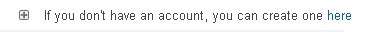
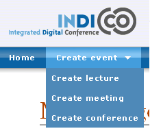
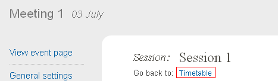
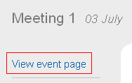
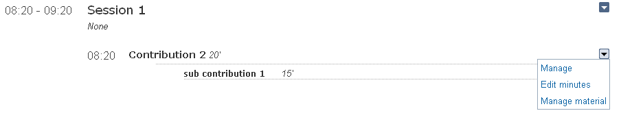
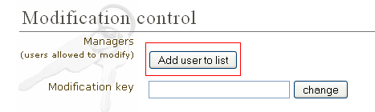

1.1. Preliminary Note on Indico¶
Indico is currently in the process of replacing CDS Agenda as the only CERN event management software. The developement of Indico was triggered by the fact that CDS Agenda was not able to cope with the administration of bigger events such as workshops and conferences which are regularly organised in the Organisation. Indico solves this issue by providing its users with tools to manage the biggest conference (nearly) as easily as the simplest lecture. In between, meeting management has also been enriched with new features such as videoconference bookings, participant management... Others will soon come, like room booking or task list management, teleconference booking... and will make of Indico a really integrated event management software. We hope you will enjoy using Indico, and please do not hesitate to contact us (indico-team@cern.ch) if you wish to propose an improvement, report a bug or simply need help...
1.2. General¶
1.2.1. Login¶
Use the “login” link in the top-right corner of the screen.
You may use your CERN NICE account. If you don’t have one, then choose the “If you don’t have an account” section of the login page.

The “remind me of my password” feature works only with local Indico accounts, not with NICE ones.
1.2.2. Modify Account Data¶
Once logged in, you may click on your name which appears in the top-right corner to modify all the information associated with your account (tel. number, affiliation...).
1.3. Event Creation¶
As in CDS Agenda, events can be created in all category which do not contain any subcategory. In such categories, a menu such as this one will appear in the top bar:

In order to create an event, click on the proper event type and fill the form in.
1.3.1. Lectures¶
A lecture is the simplest event possible. It consists of a title, speaker, dates, description, plus attached files. It does not contain a timetable.
1.3.2. Meetings¶
Create a meeting if you wish to handle a timetable with several items inside, attach files to them...
1.3.3. Conferences¶
You should choose to create a conference only if you need advanced features such as call for abstract, registration form, epayment. The Conference type creates a real web portal to your event, not just a timetable.
1.4. Event Modification¶
1.4.1. Using a Modification Key¶
As in CDS Agenda, you may use a modification key in order to modify your meeting. To do so, go to the display page of the meeting and click on the pencil button in the top menu, then enter the modification key.

Note: Unlike in CDS Agenda a modification key will not be automatically given to your meeting. (see section 4 if you want to set one for your meeting)
1.4.2. By logging In¶
Being logged in will give you a default access to the modification of the meetings for which you have the proper rights. For example, if you have created an event, you will have this default right, as well as if you are the manager of the category in which the meeting resides. The manager of the event may also grant you modification rights on the full event or only on parts of it (a session, a contribution...).
1.4.3. Access to the Modification Interface¶
Once you have entered the modification key, or if you are logged in with rights over the event, small blue arrows will appear in the timetable next to the items you are allowed to modify. If you click on it, you will see a menu with all the options to modify, write minutes, manage material, etc.
1.4.4. Creating a Timetable¶
Once you have created your meeting, access the modification area by clicking the pencil button on the top bar. Then click on the “Timetable” menu.

Once there, use the “new ...” buttons to populate your timetable. If you have created a session and want to populate its inner timetable, simply click on its name. Once you have populated the session timetable, you can easily go back to the main timetable by clicking on the meeting name:

Once you have finished modifying the event, you can go back to its display page by clicking on the display icon:

1.4.5. Posting Files/Links¶
You can either post a file or a link from the display of the timetable of your event by clicking on the file upload icon:

or from the modification interface of the event by choosing the “Material” menu.
1.5. Event Protection¶
1.5.1. Setting up access/modification keys¶
You need to enter the modification area in order to change these. Once in there, select the “Access Control” tab.

Then enter a modification password and/or an access password and validate your choice by clicking on the “change” button. Note: If you choose to protect the access to your event, setting an access key will not be sufficient: don’t forget to set the current status of the event to “PRIVATE”!
1.5.2. Delegate Management Rights¶
Instead of using a modification key, you can also grant administrative rights over your meeting to a given person. For this click on the “add” manager of the “modification control” section:

Then search for the person in question in the database of Indico users. Both the local Indico database of users and the CERN NICE database will be searched. If the person in question does not have an account yet, please ask him/her to register in the system.
Table Of Contents
- 1.1. Preliminary Note on Indico
- 1.2. General
- 1.3. Event Creation
- 1.4. Event Modification
- 1.5. Event Protection